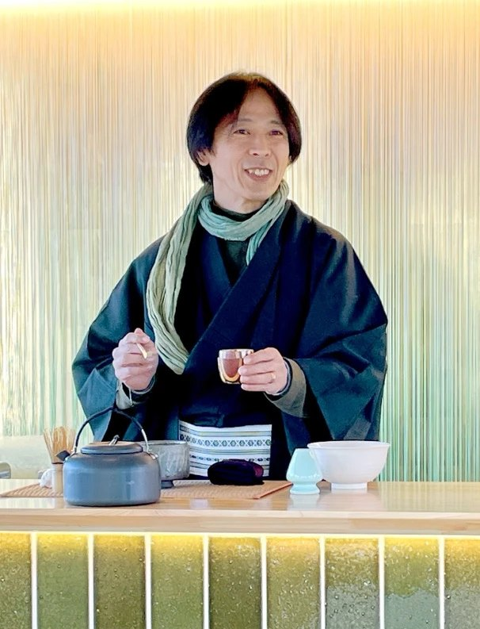

Table Tea Ceremony
お茶を学ぶ時間ではなく、
静けさの中で、感覚を思い出す時間。
刀を振るときも、茶を点てるときも、
身体はひとつの線の上にあります。
動きの極まるところには、必ず静けさがあり、
静けさの奥には、かすかな動きが息づいています。
呼吸と身体を整えてきた稽古の感覚は、
一服の中にもそのまま流れています。
動と静は、反対ではなく、
同じ感覚のふたつの表れです。
難しい作法よりも、
まずは「いま、ここ」にある五感をひらくこと。
湯の音、茶筅の触れる気配、
器の温度、立ちのぼる香り、
口に広がる苦みと甘み。
倭迅会のテーブル茶道は、作法を覚えるための場ではなく、
自分の感覚に還るための入口です。
日々の中で、私たちは多くを見て、考え、判断し続けています。
その速さに押されて、呼吸は浅くなり、
本来そこにあるはずの音や香りに気づきにくくなっていきます。
一服のお茶を点てる時間は、
その感覚をそっと取り戻すための、小さな余白です。

茶筅が器に触れる音。
湯気に混じる抹茶の香り。
器を持つ手の温度、口に広がる苦味と甘み。
窓から入る光や、場に流れる空気。
体験のあと、視界が少し明るく感じたり、
香りや音に気づきやすくなることがあります。
茶道の形式は、美しい世界を守ってきました。
ただ、その入り口が少し狭いと感じる方もいます。
正座ができなくても、作法がわからなくても、
一服を受け取るところから始められる場を開いています。
私の感じる茶道の本質——五感で場を楽しむ感覚——は、
最初の一服からすでに始まっています。
形はありますが、縛るためのものではありません。
安心して味わうための、ひとつの道しるべです。
うまく点てることよりも、自分の手で点て、自分の感覚で味わうことを大切にします。
いきなり作法に入るのではなく、
まずは一息つき、身体と場が落ち着くところから。
茶道未経験の方、正座が苦手な方、膝に不安がある方お気軽にどうぞ。
テーブルと椅子で行うため、無理な姿勢は必要ありません。
お子さまや、和文化が初めての方にも開かれています。
日常の速さから少し離れ、身体と場を落ち着かせます。
香り、音、光、器の感触など、今ここにあるものへ意識を向けます。
難しい説明ではなく、流れと空気を見て感じていただきます。
ご自身の手でお茶を点てます。
うまくやるより、味わうことを大切にします。
甘み、苦味、温度、香りの変化をゆっくり受け取ります。
体験後の呼吸、視界、音への気づきをそのまま感じます。
体験の目的は、非日常に逃げることではありません。
一服を通じて、呼吸を整え、感覚をリセットし、
日常へ戻るためのスタートラインに立ち直ること。
本来の自分が見ていた世界、感じていた世界を思い出す。
その余白を、静けさの中に作ります。
茶道未経験の方、正座が苦手な方、膝に不安がある方も
お気軽にご相談ください。。
テーブルと椅子で行うため、無理な姿勢は必要ありません。
お子様や、初めて和文化に触れる方にも参加しやすい内容になっています。
難しいことはしません。まずは呼吸から始めます。
LINEで申し込む・相談する正座不要 / 初心者歓迎 / 子供参加可 / 出張相談可
まずはご希望の人数・場所・内容をお知らせください。